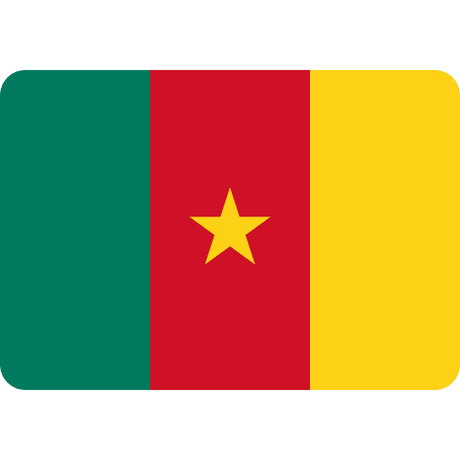
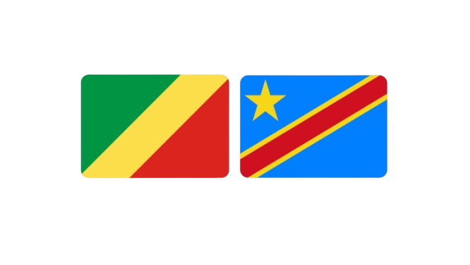
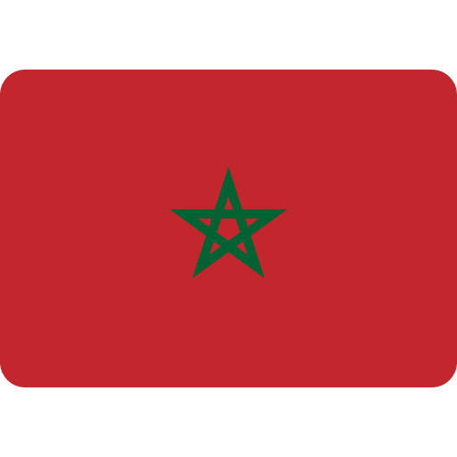
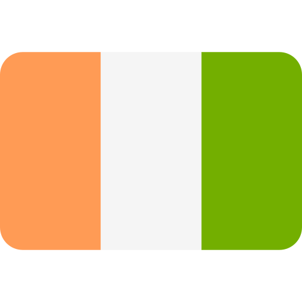
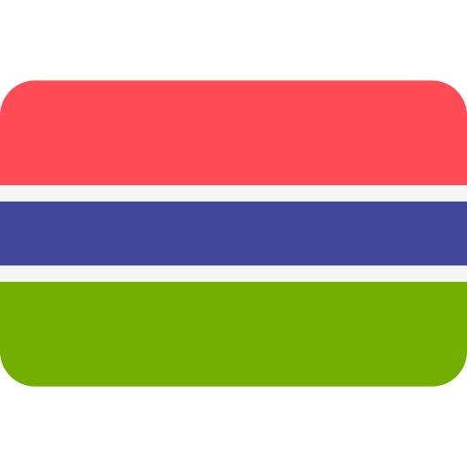

Benvinguts al món de les danses africanes
Les danses africanes són molt més que moviments: són una forma poderosa d'expressió cultural, una finestra a la història, les creences i les tradicions de les diferents comunitats del continent africà.
Des dels ritmes contagiosos de Camerun fins a les danses plenes d'espiritualitat i connexió amb la natura de Ghana, cada pas i cada gest expliquen una història única.
Estàs preparat per moure't al ritme de l'Àfrica?
Països treballats
Fes clic sobre el país que t’interessi per descobrir més sobre les danses tradicionals i modernes.
Camerun
Ritmes diversos que reflecteixen la gran varietat ètnica del país. Danses com el Bikutsi o l’Assiko en són exemples emblemàtics.
RDC i República del Congo
El Ndombolo i el Soukous són danses modernes que han revolucionat l’escena musical de la regió.
Marroc
Danses com l'Ahidous i el Chaabi representen la cultura amaziga i àrab amb una gran connexió espiritual.
Sud-àfrica
Del Gumboot al Pantsula, les danses sud-africanes parlen de resistència, expressió i vida urbana.

Costa d'Ivori
Danses com el Zaouli són símbol d'identitat i tradició en les comunitats ivorianes; el Coupé-Décalé marca l'escena urbana.
Gàmbia
Amb danses com el Jola i el Mandinka, Gàmbia celebra els seus rituals ancestrals i la vida comunitària.
Clica qualsevol imatge per descobrir més
Vídeos
Aquí podràs veure els vídeos explicatius dels diferents passos.